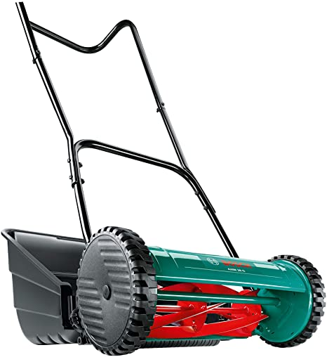

Bosch AHM 38 G
El Bosch AHM 38 G és un tallagespa manual amb cilindre de 5 ganivets, perfecte per a jardins petits i mitjans. Amb una amplada de tall de 38 cm, aquest tallagespa ofereix un rendiment eficient i precís en la gespa, permetent un tall net i uniforme.
El sistema de cilindre de 5 ganivets i la ganiveta inferior ajustable del Bosch AHM 38 G garanteixen un tall precis i una gran qualitat de la gespa. A més, la seva alçada de tall ajustable entre 15 i 43 mm permet adaptar el tall a les teves necessitats específiques.
No esperis més i adquireix el teu Bosch AHM 38 G per gaudir d'un jardí perfecte i ben cuidat sense esforç.
Compra ara